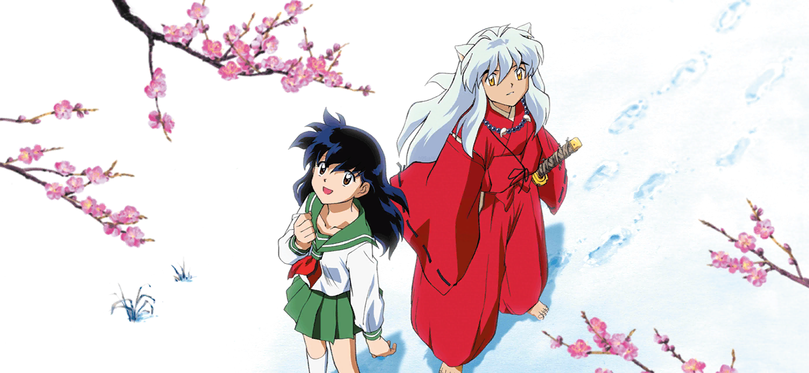
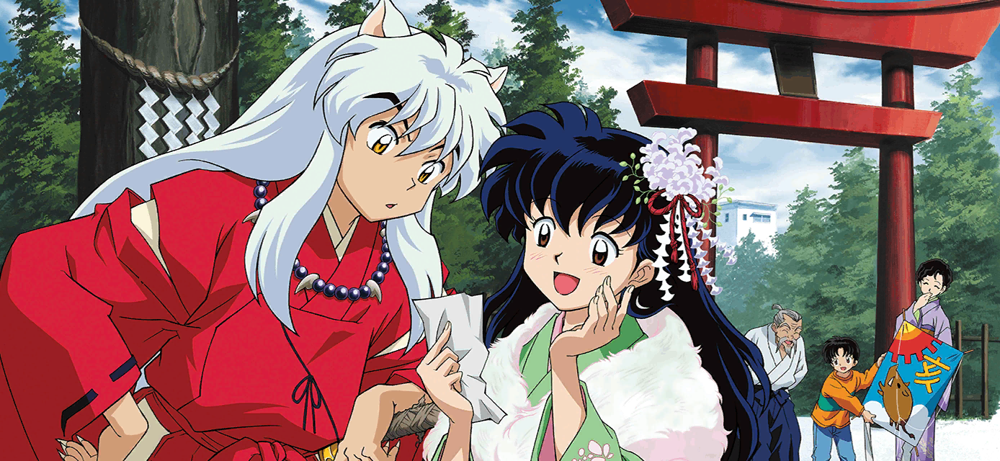
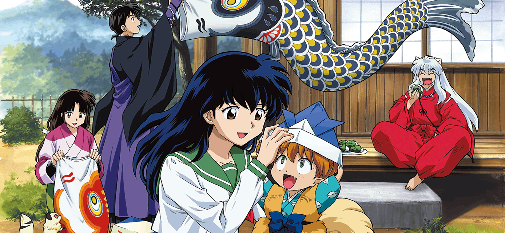
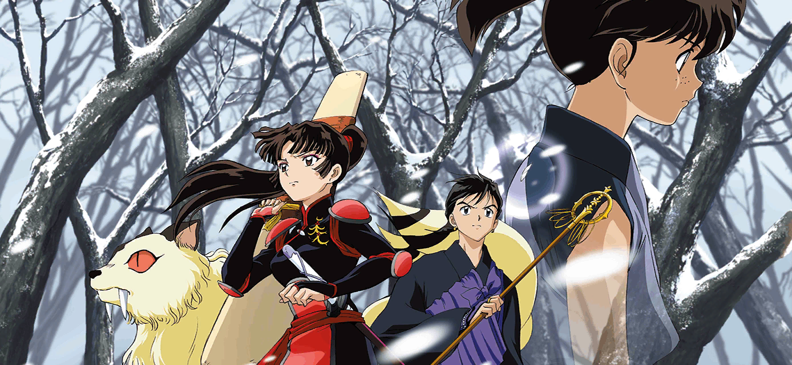
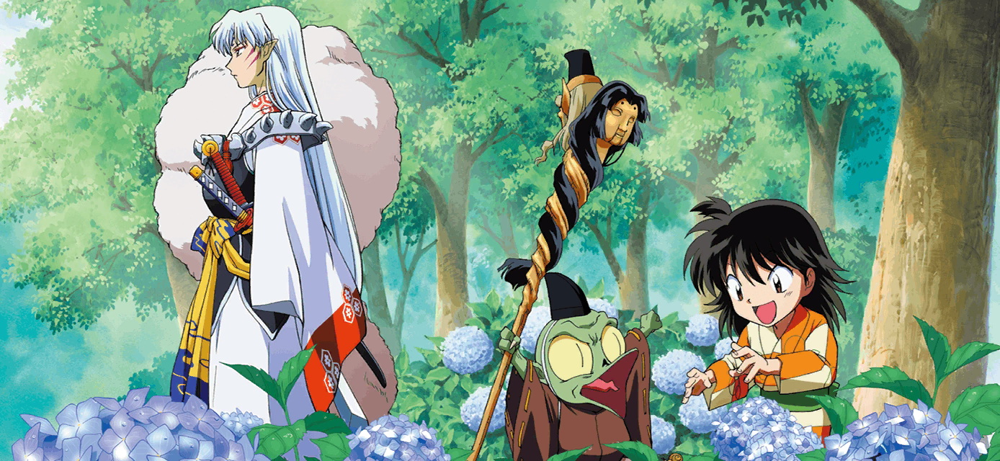

一起踏雪
戈薇穿越战国时代、与半妖犬夜叉相遇的初期剧情 —— 两人在雪景中初次同行，戈薇刚接触 “四魂之玉” 的秘密

戈薇穿越战国时代、与半妖犬夜叉相遇的初期剧情 —— 两人在雪景中初次同行，戈薇刚接触 “四魂之玉” 的秘密

犬夜叉一行收到关于 “四魂之玉碎片” 的线索信，同时弥勒、珊瑚等新伙伴登场（珊瑚带着云母追寻奈落）

犬夜叉、戈薇、弥勒、珊瑚等在旅途中恰逢战国的传统节日，暂时放下冒险、一同庆祝

犬夜叉一行讨伐依附四魂之玉作恶的妖怪（比如盘踞村落的妖物），戈薇的破魔矢、弥勒的风穴等能力首次协同作战

杀生丸与犬夜叉的冲突（争夺父亲的妖刀），而小妖盖邪见和玲则紧随其后